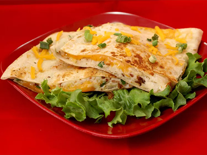

Quesadilla

Description
A quesadilla is a Mexican dish consisting of a tortilla that is filled primarily with cheese, and sometimes meats, spices, and other fillings, and then cooked on a griddle or stove. Traditionally, a corn tortilla is used, but it can also be made with a flour tortilla.
This recipe can be played up with just about anything you like with potatoes.
Ingredients
These are the ingredients you'll need to make this irresistible quesadilla recipe:
- 2 cups mashed potatoes
- 6 slices cooked bacon, crumbled
- ¼ cup sliced green onions
- 8 flour tortillas
- 2 cups shredded cheddar cheese
- 2 tablespoons softened butter
- 1 cup salsa
- ¼ cup sour cream
Steps
- Stir together mashed potatoes, bacon, and green onions. Spread mashed potato mixture onto 4 tortillas, spreading to within ½ inch of the edges.
- Preheat a large skillet over medium heat.
- Place a quesadilla into the preheated pan and cook until golden brown and crispy, 2 to 3 minutes per side. Repeat with remaining quesadillas.
- Serve with salsa and sour cream.